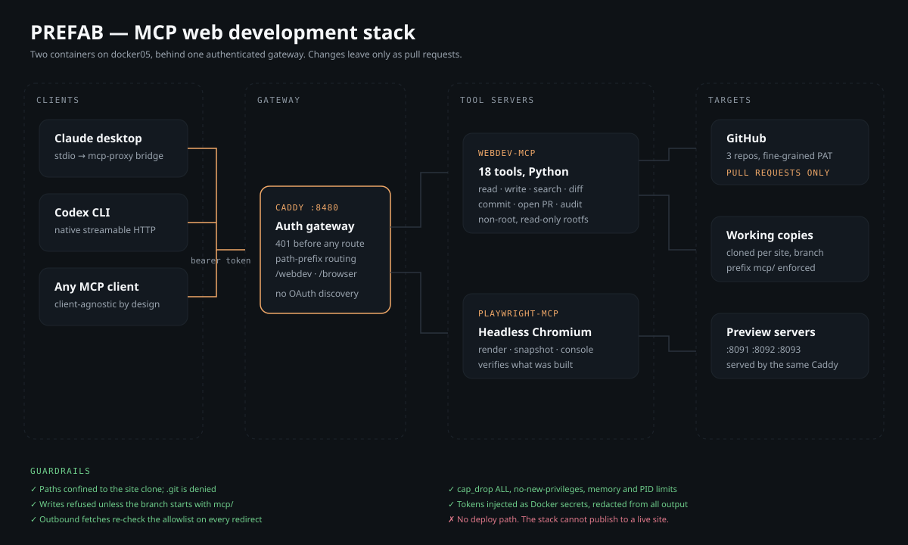

Case study · AI tooling and automation
PREFAB: giving an AI client hands, and a short leash
A self-hosted Model Context Protocol stack that lets Claude or Codex read, edit, build, render and audit three live websites — without a deploy path, and without a credential either model ever sees.
The problem in one sentence. An AI assistant is useful on a codebase exactly to the degree that you can bound what it is able to touch — and the usual answer, handing it a shell and a deploy key, puts the blast radius in the wrong place.
Architecture
Two containers, one gateway, no route to production
{kind=link}

What I built
- An 18-tool MCP server in Python on FastMCP: clone and sync, branch, list, read, write, targeted replace, delete, search, status, diff, discard, commit, open pull request, build, and audit a page or a whole site.
- A Caddy gateway that rejects unauthenticated requests with a 401 before any route is considered, strips path prefixes, and answers OAuth discovery probes with a 404 so clients fall back to the bearer token rather than negotiating.
- A headless Playwright service on the same gateway, so the same session that writes a page can render it, read its console, and check it for overflow at any viewport.
- Per-site preview servers on dedicated ports, serving each working copy live — a change is visible in a browser before it is committed.
- A deploy script with preflight checks, retry and backoff, config validation before reload, digest pinning, and a seven-check smoke test that must pass before the deploy is called done.
- Operations documentation written for a wiki, covering build, deploy, client configuration, token rotation and failure modes.
The guardrails are the product
Every one of these is enforced in the server, not in a prompt
Path confinement
Every file operation resolves the real path and refuses anything outside that site's clone. The .git directory is denied outright, so history cannot be rewritten through a file write.
Branch discipline
Writes are refused unless the checkout is on a branch with the mcp/ prefix. There is no code path that commits to the default branch, and no tool that pushes to it.
Egress allowlist
Outbound fetches check the destination against an allowlist, and re-check it on every redirect — because a permitted URL that redirects to an internal address is the whole server-side request forgery problem in one line.
Container least privilege
All capabilities dropped, no-new-privileges, read-only root filesystem with explicit tmpfs, memory, PID and CPU limits. Credentials arrive as Docker secrets and are redacted from every tool response.
What it changed
Review replaced trust
Because the only output is a pull request, the interesting question stops being "do I trust the model" and becomes "is this diff correct" — a question with a known answer procedure.
Verification moved in-loop
The audit and browser tools run against the preview in the same session as the edit, so a broken layout or a dropped heading is caught before the commit, not after the merge.
The client stopped mattering
Streamable HTTP with a bearer token means Claude, Codex and anything else speaking MCP attach to the same server. No per-client server, no per-client credential.
It rebuilt this site
The page you are reading was written, previewed, audited and committed through the stack. It is the least ambiguous test I could give it.
In progress: a QA automation tier Not built yet
Stated plainly: this section describes work that is designed but not delivered. It is here because the design decision is the interesting part, not because there is a result to claim.
The browser tier already renders and inspects pages on demand. The gap is that nothing runs unattended: there is no regression suite, so a change that quietly breaks a page two links away is caught by a human noticing, which is not a control.
- A regression suite over every published page — status, heading structure, internal link integrity, and no horizontal overflow at a set of viewports.
- Accessibility assertions in the same pass, so a contrast or landmark regression fails the run rather than waiting for an audit.
- Visual diffing against an approved baseline, with the diff attached to the pull request that caused it.
- The whole suite exposed as MCP tools behind the same gateway, so the agent that makes a change is the one that has to prove it did not break anything.
The open decision is Playwright versus Selenium. Playwright is already in the stack, is faster in a container, and needs no extra moving parts — extending it is close to free. A Selenium MCP buys real cross-browser coverage through Grid and matches what most QA organisations already run, at the cost of another service, a browser fleet and more to keep patched. For three static sites that one person maintains, the honest answer is probably to extend what is already there and revisit Selenium when cross-browser evidence is actually being asked for.